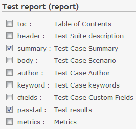
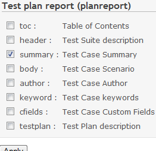

Plugin Usage
testlink(testcase) Macro
Writes macro like this format:
{{testlink(KEY, ID)}}
{{testcase(ID)}}
In KEY, describes the key which specifies a link target.
The testcase macro is the one omitted case key.
Specifies an object ID of a target by ID.
An object ID of test case is found out at once, but Others is not.
Finds it from page adress and so on.
The link target which can be used is following:
| Key | Link target | Remarks |
|---|---|---|
| case | Test case | |
| suite | Test suite | |
| project | Test project | TestLink 1.8 or later |
| plan | Test plan | |
| milestone | Milestone | |
| build | Build target | |
| cfield | Custom field | |
| keyword | Keyword infomation | |
| user | User infomation |
Examples:
{{testcase(sample-1)}}
{{testlink(case, sample-1)}}
{{testlink(suite, 2)}}
{{testlink(project, 1)}}
{{testlink(plan, 5)}}
{{testlink(milestone, 1)}}
{{testlink(build, 1)}}
{{testlink(cfield, 1)}}
{{testlink(user, 1)}}
Link to test results
If The version of TestLink is 1.8 or later, You can link to a test reslut.
{{testlink(KEY, ID [, ...])}}
{{testreport(ID, PLAN_ID [, OUTPUT_ITEM, ...])}}
The testreport macro is the one omitted report key respectively.
The arguments since then ID change with the specified key.
The link target for test results is following:
| KEY | Link target | Remarks |
|---|---|---|
| report | Test report | ID need two. Enable output items |
| planreport | Test plan report | ID need two. Enable output items |
| metrics | Metrics | |
| result | Test result | Enable status |
| graph | Graph of test result |
Keys of report and planreport need two ID (ID, PLAN_ID) arguments.
And can be given output items after them.
| OUTPUT_ITEM | Description | report | planreport |
|---|---|---|---|
| toc | Table of Contents | OK | OK |
| header | Test Suite description | OK | OK |
| summary | Test Case Summary | OK | OK |
| body | Test Case Scenario | OK | OK |
| author | Test Case Author | OK | OK |
| keyword | Test Case keywords | OK | OK |
| cfields | Test Case Custom Fields | OK | OK |
| passfail | Test results | OK | |
| metrics | Metrics | OK | |
| testplan | Test Plan description | OK |
If omit output items, set default items which set in this plugin setting page.
 
Examples:
{{testreport(2,6)}}
{{testlink(report, 2, 6)}}
{{testreport(2,6, header, summary, toc, body, cfields, author, keyword, passfail, metrics)}}
{{testlink(planreport, 2, 6)}}
{{testlink(planreport, 2, 6, header, summary, toc, body, cfields, author, keyword, testplan)}}
{{testlink(metrics, 6)}}
{{testlink(graph, 6)}}
Argument of result
In the result case, A status of test case is given after ID argument, and The output result is filtered.
If omits status, show test cases of all status.
{{testlink(result, ID, STATUS)}}
| STATUS | Description |
|---|---|
| f | Failed Test Cases |
| b | Blocked Test Cases |
| n | Not run Test Cases |
Examples:
{{testlink(result, 6)}}
{{testlink(result, 6, f)}}
Macros(testfile) for file download
testfile macro links to output file in MS Word form, MS Excell and so on.
(TestLink 1.8 or later)
Writes macro like this:
{{testfile(FORMAT_NAME, KEY, ID [, ...])}}
This macro is same as testlink except first argument(FORMAT_NAME) specified format type.
Enable KEY are changed by a specified format name.
| Format | FORMAT_NAME | Enable KEY |
|---|---|---|
| OpenOffice Writer | odt | report, planreport |
| OpenOffice Calc | ods | metrics, result |
| MS Word | doc | report, planreport |
| MS Excel | xls | metrics, result |
Example:
{{testfile(odt, report, 2,6)}}
{{testfile(odt, planreport, 2, 6, header, summary, toc, body)}}
{{testfile(ods, metrics, 6)}}
{{testfile(ods, result, 6)}}
{{testfile(ods, result, 6, n)}}